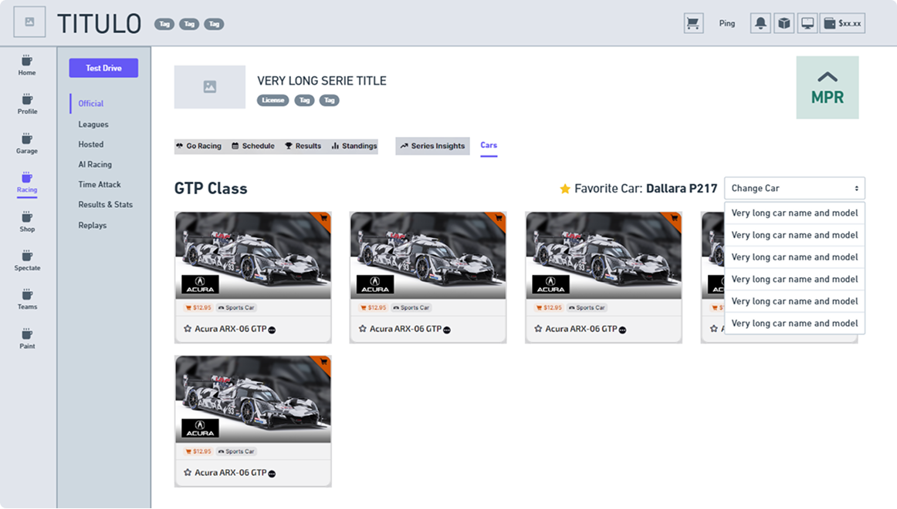

Mid-Fidelity Wireframes
Starting the redesign
 Series list
Series list

- New architecture, an added shopping cart and adjusted column information.
 Series details
Series details

- Added “MPR” visual feedback, meaning that taking part in this series raises the user’s license.
- “Rules & Format” collapsed into a dropdown.
- Redesigned the layout of the time, drivers and CTA information.
- Redesigned the practice and race tables with their schedules.
- Redesigned the car, track and weather cards into 3 columns.
Series calendar

- Redesigned the past, current and upcoming event cards.
- “Content Manager” collapsed into a dropdown.
 Cars section
Cars section

- This section was added to show the competing cars.
- The option to choose the car as a favorite was also added here.
Next UX element
But there are also...